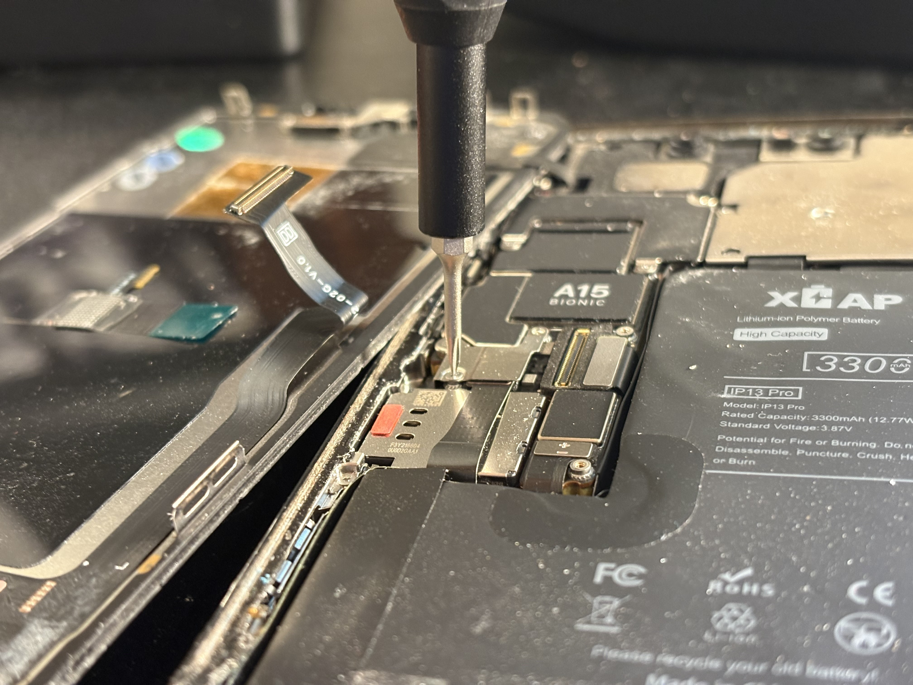

Overview
Smartphone repair at the component level means working inside tight tolerances with small, densely packed parts — display assemblies, batteries, and internal boards — where a small mistake can take out the whole device. This work covers diagnosing the actual fault first, then doing the precision disassembly and reassembly needed to fix it correctly.
Highlights
- Performed component-level repair on smartphones including display, battery, and internal assemblies requiring fine tolerance handling and system diagnostics.
Gallery

